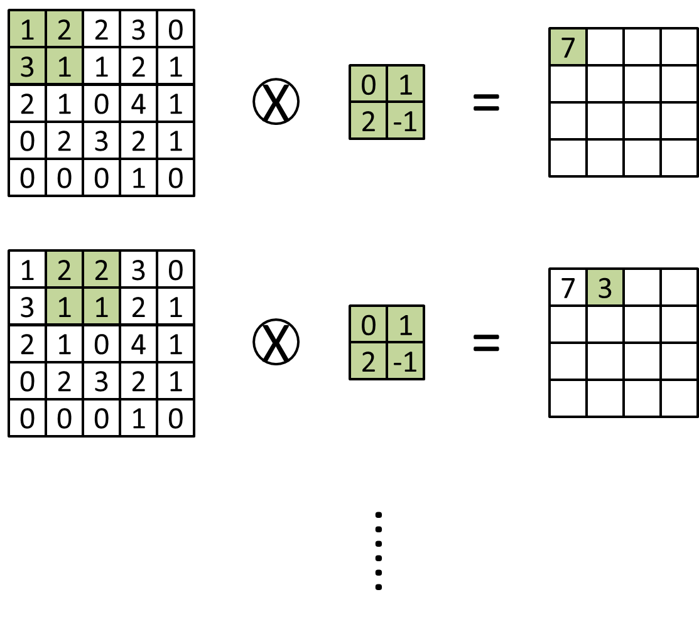
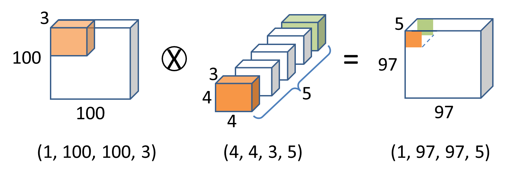
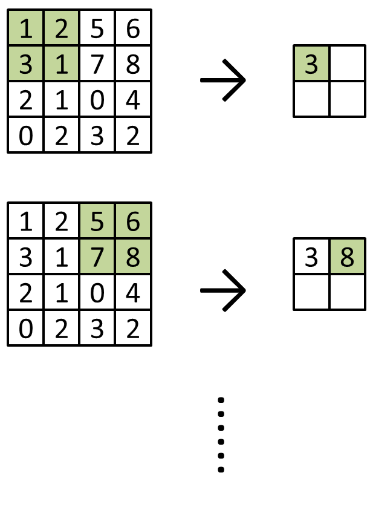

除了 MLP 以外，卷積神經網路(Convolutional Neural Network, CNN)也是一種經常被使用的神經網路。它的概念比較像是用濾波器模擬人眼的視野，經由一層一層的處理，來萃取從局部的邊緣、角點，到整體的物體、場景等特徵。因此，convolution 本身的操作，是由一塊小的矩陣（濾波器 filter，或者稱為卷積核 kernel）對一個大的矩陣（例如影像）進行滑動，每次將對應位置的元素相乘後再相加。以下圖為例，大矩陣的尺寸是 5 * 5，kernel 的尺寸是 2 * 2，每次移動一格後，會得到 (5-2+1) * (5-2+1) = 4 * 4 的輸出。當然，你也可以不要每次只移動一格，而是一次移動兩格、三格，甚至更多，這個就是 PyTorch 或其他常見工具裡的 stride 參數，而預設值為 1，代表一次移動一格；而如果希望輸出的矩陣大小與輸入相同，也可以事先在輸入矩陣的四周補零（或其他數值，如果你使用的工具允許），我們稱之為 padding。若需要知道考慮 stride 大於 1、輸入有 padding，或甚至 dilation 等情況後的輸出大小該如何計算，可以參考 PyTorch 等工具的官方文件。

而在 CNN 中，一個 convolution layer 會由多個 kernels 所組成，因此輸出會是多個矩陣疊在一起，疊加的維度稱為 channel。若仍以影像為例，假設輸入是一張 100 * 100 * 3 的 RGB 影像（3 個 channels），並且使用 5 個 4 * 4 * 3 的 kernels（kernel 的 channel 數必須跟輸入影像一樣）時，輸出會是一個 97 * 97 * 5 的特徵圖；輸出的每個 channel 都是由對應的一個 kernel 跟輸入影像做完整的 convolution 運算得到的。

上面圖片當中的下方的數字，用於影像時是依次代表訓練階段一次放幾張進去(batch size)、影像高度、影像寬度，以及該影像的 channel 數量；而用於 kernel 時則是 kernel 高度、kernel 寬度、輸入影像的 channel 數量，以及輸出影像的 channel 數量。需要注意的是，各家的深度學習工具為了效能等方面的考量，預設不一定是使用前述的維度順序；在目前較常見的工具中，主要是以 TensorFlow 會使用前述的順序（稱為 NHWC 或 channels-last），而其他工具例如 PyTorch，預設的影像維度順序是 batch size、該影像的 channel 數量、影像高度，以及影像寬度（稱為 NCHW 或 channels-first）；預設的 kernel 維度順序則是輸出影像的 channel 數量、輸入影像的 channel 數量、kernel 高度，以及 kernel 寬度。本頁中的範例程式碼是使用 PyTorch 來製作，因此程式碼的維度順序，會與圖片中以 TensorFlow 為準的順序不同，請留意。
為了減少運算量和增強模型對微小位移的不變性等緣故，通常還會在卷積層之間加入池化(pooling)的運算，也就是在一小塊區域裡，只保留一個代表性的數值。比較常見的方法是取平均值或最大值來作為代表，分別稱為 average pooling 和 max pooling（具體的函式名稱，在各家工具當中可能有所不同）。以 max pooling 為例，若只考慮一個 channel，影像大小 4 * 4，以及 kernel（或稱 pooling window）大小 2 * 2 時，操作方式的示意如下：

由上圖可見，在 pooling 運算中，pooling window 每次移動的長度，預設會等於 window 的大小，即 stride = window size（這點與 convolution kernel 的預設行為不同，請留意）。而當輸入大小不是 window size 的整數倍，而其他參數仍使用預設時，則多數工具的行為是將剩下的部分捨去，例如 7 * 7 大小的輸入，遇到 3 * 3 大小的 pooling window，則輸出大小會是 floor(7 / 3) * floor(7 / 3) = 2 * 2。若需要知道考慮 stride 不等於 window size、輸入有 padding，或甚至 dilation 等情況後的輸出大小，可以參考 PyTorch 等工具的官方文件。
以下是用 PyTorch 的 CNN 相關函式庫，進行數字辨識的範例：
import torch import torch.nn as nn from torch.utils.data import DataLoader from torchvision import datasets, transforms device = torch.device('cuda:0' if torch.cuda.is_available() else 'cpu') train_set = datasets.MNIST(root='./data', train=True, download=True, transform=transforms.ToTensor()) test_set = datasets.MNIST(root='./data', train=False, download=True, transform=transforms.ToTensor()) print('Data shapes:', train_set.data.shape, test_set.data.shape) train_loader = DataLoader(train_set, batch_size=128, shuffle=True) test_loader = DataLoader(test_set, batch_size=128) model = nn.Sequential( nn.Conv2d(1, 16, kernel_size=3, padding=1), nn.ReLU(), nn.MaxPool2d(2), nn.Conv2d(16, 32, kernel_size=3, padding=1), nn.ReLU(), nn.MaxPool2d(2), nn.Flatten(), nn.Linear(32 * 7 * 7, 256), nn.ReLU(), nn.Linear(256, 10) ).to(device) optim = torch.optim.Adam(model.parameters()) criterion = nn.CrossEntropyLoss() model.train() for i in range(10): print(f'Epoch {i+1}/10') for X_batch, y_batch in train_loader: loss = criterion(model(X_batch.to(device)), y_batch.to(device)) optim.zero_grad() loss.backward() optim.step() model.eval() correct = sum( (model(X.to(device)).argmax(dim=1) == y.to(device)).sum().item() for X, y in test_loader ) print('Accuracy: {:.2f}%'.format(100 * correct / len(test_set)))在上述範例中，
- 使用的資料集是 MNIST，內容為 0~9 的數字影像，影像大小為 28 * 28，只有一個 channel。在同一資料夾下初次執行此範例時，需要花時間下載該資料集，請稍做等候。
- (Convolution → activation function → pooling) * n → flatten → MLP 是使用 CNN 的經典架構之一，你也可以視需要做後續修改。
- 首個 nn.Linear 的輸入大小為 32 * 7 * 7，是因為前面的網路層對原始輸入進行處理後，輸出為 32 個 channel，大小為 7 * 7 的特徵圖（請試著自己推算看看）；最後一個 nn.Linear 的輸出為 10，是因為我們將此問題視為分類問題（可以想想看，為什麼不是回歸？），而其共有 10 個不同的數字，代表 10 個不同的類別。
使用 CNN 的另一個經典架構，是 Fully Convolutional Network（全卷積網路），它的優點是可處理任意寬高大小的輸入。若要嘗試，只需要把前一個範例的模型定義，更換為以下內容：
model = nn.Sequential( nn.Conv2d(1, 16, kernel_size=3, padding=1), nn.ReLU(), nn.MaxPool2d(2), nn.Conv2d(16, 32, kernel_size=3, padding=1), nn.ReLU(), nn.MaxPool2d(2), nn.Conv2d(32, 256, kernel_size=1), nn.ReLU(), nn.Conv2d(256, 10, kernel_size=1), nn.AdaptiveAvgPool2d(1), nn.Flatten() ).to(device)在上述範例中，
- 主要是以 kernel size 為 1 * 1 的卷積層，來代替原本的 nn.Linear。
- 在最後使用的 nn.AdaptiveAvgPool2d(1)，其效果是將寬和高都壓成 1，此操作一般稱為 Global Average Pooling，你當然也可以試試看 Max Pooling 的效果。
- 仍須使用 nn.Flatten() 來攤平 batch 以外的維度，以符合後續操作所需的 (batch, feature) 的 shape 要求。